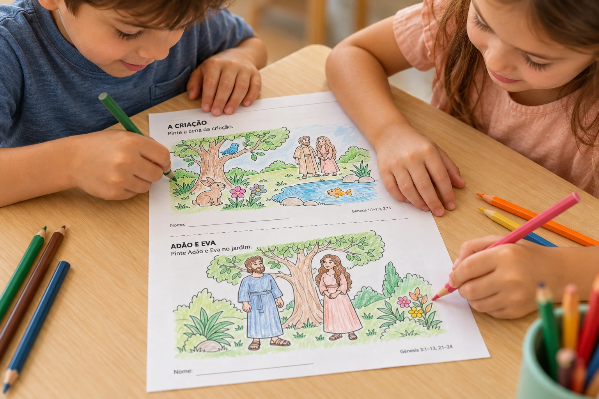
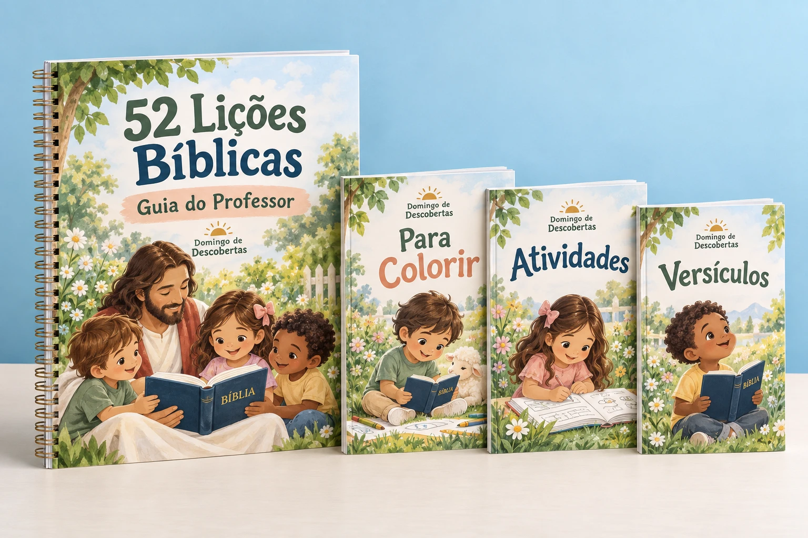

“Ter a história e as perguntas juntas é o tipo de apoio que eu gostaria de ter na preparação de domingo.”
AM
Ana MartinsPersonagem ilustrativa
 Domingo de
Domingo deSua próxima aula começa com uma boa história.
E com tudo organizado para contá-la.
Guia do professor e atividades para imprimir, conversar e descobrir a Palavra de Deus com crianças de 4 a 8 anos.
Quero conhecer as 52 liçõesPDFs para imprimir · Pagamento único
Essencial R$10 · Completa R$29,90
Uma história aqui, uma dinâmica ali, uma atividade que ainda falta encontrar… Aqui, você parte de um roteiro organizado e escolhe os recursos para a sua turma.
Estas são páginas reais dos PDFs. Toque em uma amostra para ler em tamanho maior.
História, perguntas, dinâmica e oração em uma sequência para conduzir a aula.

Escolha a liçãoLeia a passagem e conheça a história, as perguntas e a dinâmica sugerida.
Separe as atividadesImprima as folhas que pretende usar. Adapte o encontro à idade da sua turma.
Abra espaço para descobrirConte, converse, escute e convide as crianças a participar.
O Domingo de Descobertas nasceu para apoiar quem dedica tempo e carinho ao ensino da Bíblia para crianças.
Reunimos lições e atividades para facilitar a preparação e abrir espaço para o que importa: contar histórias, ouvir perguntas e conversar sobre a Palavra de Deus.
“Uma aula não precisa ser um espetáculo. Precisa ter significado, cuidado e espaço para descobrir.”
Demonstração de layout: nomes e comentários abaixo são fictícios, não avaliações de clientes.
“Ter a história e as perguntas juntas é o tipo de apoio que eu gostaria de ter na preparação de domingo.”
“A ideia de escolher a lição e separar as folhas da turma deixa o planejamento muito mais claro.”
“Gosto de materiais que abrem espaço para a criança perguntar, conversar e participar da história.”
O Essencial já reúne o guia e as atividades para colorir. A Completa acrescenta mais possibilidades para cada encontro.

O roteiro e a atividade para seu próximo encontro.
Pagamento único · sem assinatura
O kit com mais opções para explorar as histórias.
Pagamento único · sem assinatura
R$19,90 a mais por 104 atividades extras e 52 cartões.
12 Minilivros Bíblicos · R$9,90
Um PDF de 14 páginas para imprimir e montar. Disponível à parte no futuro checkout de qualquer edição.
Você conhece a sua turma. O material oferece uma base para preparar o encontro do seu jeito.
É um produto digital em PDF. Você consulta os arquivos no celular, tablet ou computador e imprime as folhas que vai usar. Livros, lápis e outros objetos das imagens não são enviados.
Para crianças de 4 a 8 anos, com mediação de um adulto. O guia traz orientações de adaptação para 4–5 e 6–8 anos. Considere o ritmo e as necessidades da sua turma.
As duas têm o mesmo Guia do Professor e as 52 atividades para colorir. A Completa acrescenta 104 atividades complementares e o bônus de 52 cartões de versículos. Você escolhe uma edição, sem somar os dois preços.
Não. Consulte o guia e selecione as folhas que pretende usar no encontro. Há mais de uma atividade por folha em alguns arquivos; quantidade de atividades e quantidade de páginas são diferentes.
O guia reúne história, perguntas, dinâmica e oração. Você ainda precisa ler a passagem, conhecer o conteúdo e adaptar a proposta à sua turma.
Não. Os 12 Minilivros Bíblicos são um adicional opcional de R$9,90. O Essencial e a Completa funcionam sem esse material.
Esta é uma prévia para aprovação e ainda não recebe pagamentos. A plataforma de entrega, o suporte e as condições de garantia serão informados antes da abertura das vendas.
A proposta é permitir a impressão para uso nas suas próprias turmas, sem revenda ou distribuição dos arquivos digitais. A licença definitiva será disponibilizada antes das vendas.
Escolha a edição que combina com a sua turma.
Prévia para aprovação. Nenhuma cobrança será realizada.